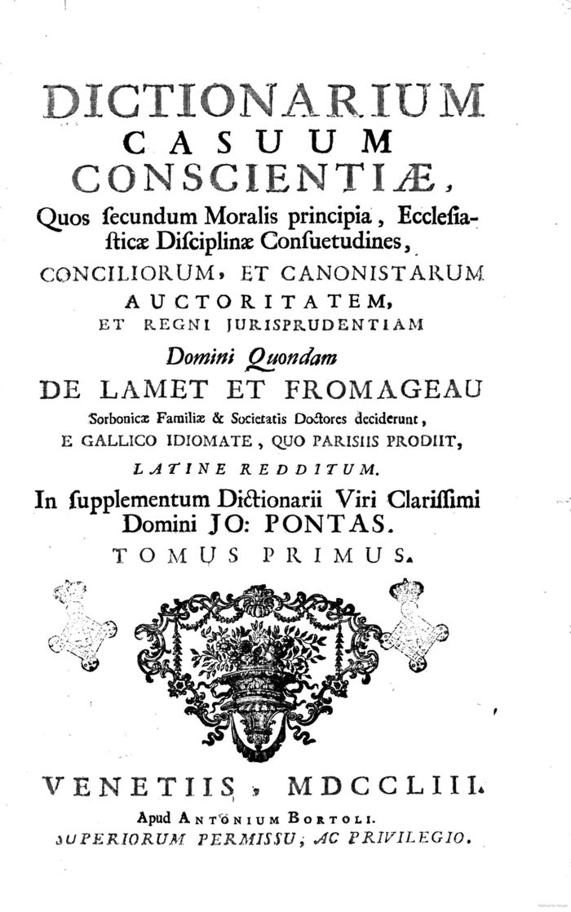
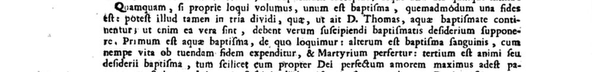
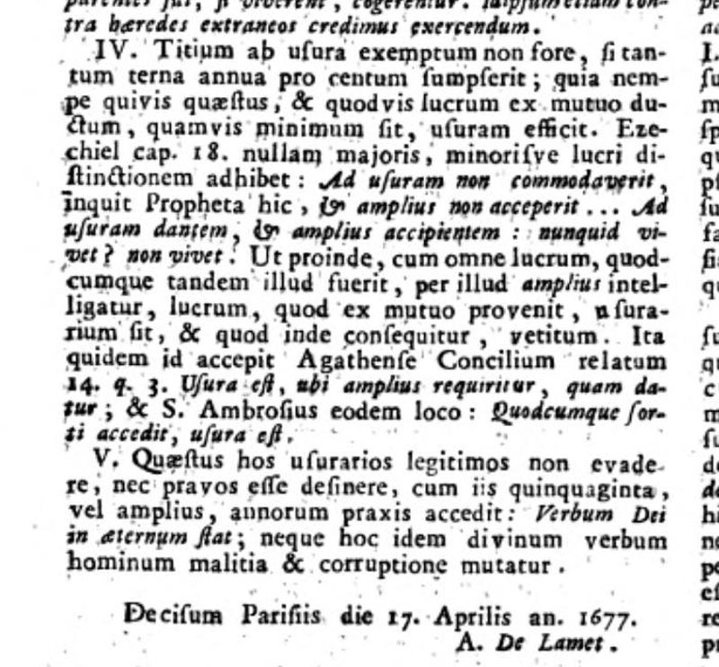
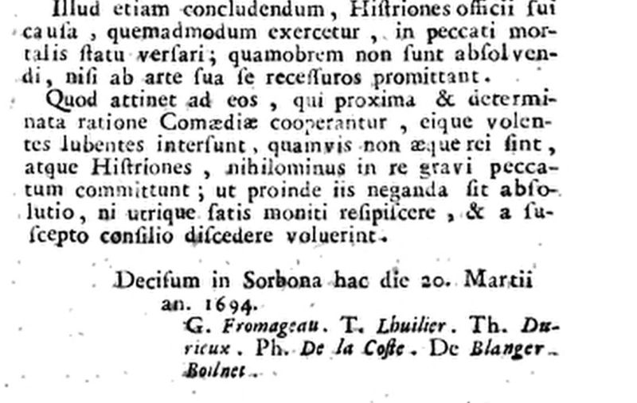

Three baptisms: water, blood and desire (tome I, art. Baptismus, p. 56)

Latin translation: Venice 1753, tome I, introduction to the article “Baptismus”, p. 56, scan n71. Lecky cites the French, tom. i. p. 208.

Properly speaking there is one baptism, as there is one faith; yet it can be divided into three, which, as St Thomas says, are contained in the baptism of water, for to be true they must presuppose a true desire to receive baptism. The first is the baptism of water, of which we are speaking; the second is the baptism of blood, when life is given up in defence of the faith and martyrdom is suffered; the third is the baptism of the spirit, or of desire, when, out of perfect love of God, there is the greatest sorrow for sins committed and a sincere will to receive baptism. St Augustine, cited in the canon Baptismi (De consecratione, dist. 4), proves the truth and efficacy of these three baptisms from St Cyprian’s teaching that suffering has the same effect as baptism, by the example of the good thief. And St Ambrose, speaking of the death of the Emperor Valentinian, who had not received baptism though he greatly desired it, seems not to doubt his salvation at all.
Original Latin
Quamquam, si proprie loqui volumus, unum est baptisma, quemadmodum una fides est: potest illud tamen in tria dividi, quæ, ut ait D. Thomas, aquæ baptismate continentur; ut enim ea vera sint, debent verum suscipiendi baptismatis desiderium supponere. Primum est aquæ baptisma, de quo loquimur: alterum est baptisma sanguinis, cum nempe vita ob tuendam fidem expenditur, & Martyrium perfertur; tertium est animi seu desiderii baptisma, tum scilicet cum propter Dei perfectum amorem maximus adest patratorum scelerum dolor, & suscipiendi baptismatis sincera voluntas. D. Augustinus productus in Canone Baptismi de consecr. dist. 4. veritatem & efficaciam horum trium baptismatum ex eo probat, quod S. Cyprianus doceat tolerantiæ eumdem ac baptismatis effectum esse, boni Latronis exemplo. Et Divus Ambrosius de Valentiniani Imperatoris, qui baptisma non susceperat, quamvis illud vehementer optaverit, morte verba faciens, videtur de ejus salute minime dubitare.
Lecky’s note (ch. IV, note 1) summarises this paragraph closely: martyrdom, “the baptism of blood”, first; a “baptism of perfect love” resting on “the case of the penitent thief”; and catechumens who died before baptism, which is the case of Valentinian II in Ambrose’s funeral oration.
“Si petit qu’il puisse être”: Titius’s three per cent (tome II, art. Usura, p. 499)
Latin translation: Venice 1753, tome II, “Usura”, case IV, answer IV and date, p. 499, scan n502.

The case: Titius lends Fabius 10,000 livres, not by a contract of rent but on bills to which 500 livres are added each year, and the doctors are asked five questions, the fourth being “whether Titius would be free from usury if he took only three in each hundred”.
IV. That Titius would not be free from usury if he took only three per cent a year, because any gain and any profit drawn from a loan, however small, makes usury. Ezekiel, ch. 18, makes no distinction between greater and lesser gain: “He that hath not given forth upon usury,” says the prophet there, “neither hath taken any increase … Hath given forth upon usury, and hath taken increase: shall he then live? he shall not live.” So that, since every gain whatever is understood by that word increase, gain that comes from a loan is usurious and, consequently, forbidden. …
V. That these usurious gains do not become lawful, nor cease to be wicked, when fifty or more years of practice support them: “The word of God stands for ever”, and that divine word is not changed by men’s malice and corruption.
Decided at Paris, 17 April 1677. A. De Lamet.
Original Latin
IV. Titium ab usura exemptum non fore, si tantum terna annua pro centum sumpserit; quia nempe quivis quæstus, & quodvis lucrum ex mutuo ductum, quamvis minimum sit, usuram efficit. Ezechiel cap. 18. nullam majoris, minorisve lucri distinctionem adhibet: Ad usuram non commodaverit, inquit Propheta hic, & amplius non acceperit … Ad usuram dantem, & amplius accipientem: numquid vivet? non vivet. Ut proinde, cum omne lucrum, quodcumque tandem illud fuerit, per illud amplius intelligatur, lucrum, quod ex mutuo provenit, usurarium sit, & quod inde consequitur, vetitum. …
V. Quæstus hos usurarios legitimos non evadere, nec pravos esse desinere, cum iis quinquaginta, vel amplius, annorum praxis accedit: Verbum Dei in æternum stat; neque hoc idem divinum verbum hominum malitia & corruptione mutatur.
Decisum Parisiis die 17. Aprilis an. 1677. A. De Lamet.
| Lecky’s French (ch. VI, note 28) | Latin translation (1753) |
|---|---|
| “Que Titius ne seroit pas exempt d’usure en ne prenant que trois pour cent d’intérêt,” | “Titium ab usura exemptum non fore, si tantum terna annua pro centum sumpserit;” |
| “parceque tout profit et tout gain tiré du prêt, si petit qu’il puisse être, fait l’usure.” | “quia nempe quivis quæstus, & quodvis lucrum ex mutuo ductum, quamvis minimum sit, usuram efficit.” |
| “L’Ézéchiel au ch. xviii. ne fait point de distinction du plus ou du moins.” | “Ezechiel cap. 18. nullam majoris, minorisve lucri distinctionem adhibet” |
| “In 1677” | “Decisum Parisiis die 17. Aprilis an. 1677.” |
The Latin is a faithful translation of the words Lecky quotes, clause for clause. The case also shows how far casuistry had already gone by 1677: the loan is disguised as bills of exchange, and the fifth question asks whether fifty years of custom had made such profits lawful.
“In the state of mortal sin”: actors, 20 March 1694 (tome I, art. Comœdia, p. 210)
Latin translation: Venice 1753, tome I, “Comœdia”, end of case I, p. 210, scan n235. Lecky cites the French, tom. i. p. 803.

From all that has been set out so far it follows, from the way the Fathers of the Church and the canons have spoken of comedy and actors, and the way bishops have expressed themselves in their rituals and still express themselves, that it must be held for certain that comedy, as performed by comedians, has always been considered evil, since it excites the passions and tends to the corruption of good morals, whether by the performance itself or by the various circumstances that accompany it.
It must also be concluded that actors, by reason of their profession, as it is exercised, are in the state of mortal sin; and therefore they are not to be absolved unless they promise to leave their art.
As for those who cooperate directly and specifically in comedy, and attend it willingly and gladly, though they are not as guilty as the actors, they still sin in a grave matter; so that absolution is to be refused to both, unless, after due warning, they are willing to repent and abandon their purpose.
Decided at the Sorbonne, 20 March 1694. [Signed] G. Fromageau, T. Lhuilier, Th. Durieux, Ph. de la Coste, De Blanger, Boilnet.
Original Latin
Ex his omnibus, quæ hactenus exposita sunt, sequitur, ex ratione, qua Ecclesiæ Patres, & Canones de Comœdia, & Histrionibus locuti sunt, quaque Episcopi sese in suis Ritualibus explicuerunt, atque etiamnum sese explicant, pro certo habendum esse, Comœdiam, prout quidem a Comicis agitur, malam semper hactenus habitam esse, quippe quæ cupiditates excitet, & ad bonorum morum corruptionem tendat, sive ob repræsentationem, sive ob varias, quæ eam comitantur, circumstantias.
Illud etiam concludendum, Histriones officii sui causa, quemadmodum exercetur, in peccati mortalis statu versari; quamobrem non sunt absolvendi, nisi ab arte sua se recessuros promittant.
Quod attinet ad eos, qui proxima & determinata ratione Comœdiæ cooperantur, eique volentes lubentes intersunt, quamvis non æque rei sint, atque Histriones, nihilominus in re gravi peccatum committunt; ut proinde iis neganda sit absolutio, ni utrique satis moniti resipiscere, & a suscepto consilio discedere voluerint.
Decisum in Sorbona hac die 20. Martii an. 1694. G. Fromageau. T. Lhuilier. Th. Durieux. Ph. De la Coste. De Blanger. Boilnet.
| Lecky’s French (ch. VI, note 139) | Latin translation (1753) |
|---|---|
| “Les comédiens, par leur profession comme elle s’exercise, sont en état de péché mortel.” | “Histriones officii sui causa, quemadmodum exercetur, in peccati mortalis statu versari” |
| “the doctors of the Sorbonne in 1694” | “Decisum in Sorbona hac die 20. Martii an. 1694.” |
Lecky’s “s’exercise” (for s’exerce) is as printed in 1865. The next case on the following page (p. 211, read in the OCR only) is headed “Judicium de Comœdia, cui titulus, Convivium Petræ”, a judgment on the comedy Le Festin de Pierre, and its first point is that the play may not be performed or watched.
Further down the rabbit hole
Sources that Lecky cites in the notes next to the ones that cite this page.
- Concina, Adversus usuram and De spectaculisA Dominican against interest and against the stage: the pope’s own polemicist
- Troplong, Du prêt: the history of lending at interest“The people cannot live without loans”: a French judge’s history of usury, Lecky’s source for Nicaea and St Louis
- Turgot, Mémoire sur les prêts d’argentLecky’s Turgot quotation with two small differences
- Augustine, Enarratio in Psalmum XXXVI, sermo 3, § 6More than given, even in wheat or wine, is usury
- Lebrun, Discours sur la comédieWhy actors were buried at night, without priest or prayer
- Cibrario, Della economia politica del medio evoTurin, 1388: a heretic who held that the Devil made Adam and Eve, and that usury was no sin


Backlinks
Every place in Rationalism in Europe that links to this page (generated automatically when the site is built).